X643–X693¶
Crossdifferences & Trilinear Poles
Trilinear multipliers for the Kiepert and Yff parabolas, crossdifferences of classical centers, and trilinear poles of central lines.
X643–X693 (Crossdifferences & Trilinear Poles) — 16 representative centers (from 51 in collection) constructed on acute reference triangle \((a, b, c) = (5, 6, 7)\) with unit baseline AB = \(1\).¶
X643TRILINEAR MULTIPLIER FOR KIEPERT PARABOLA
X643 satisfies the equation X*(incircle) = Kiepert parabola, where * denotes trilinear multiplication, defined by
X644TRILINEAR MULTIPLIER FOR YFF PARABOLA
X644 satisfies the equation X*(incircle) = Yff parabola, where * denotes trilinear multiplication, defined by
X645BARYCENTRIC MULTIPLIER FOR KIEPERT PARABOLA
X645 satisfies the equation X*(incircle) = Kiepert parabola, where * denotes barycentric multiplication, defined by
X646BARYCENTRIC MULTIPLIER FOR YFF PARABOLA
X646 satisfies the equation X*(incircle) = Yff parabola, where * denotes barycentric multiplication, defined by
X647CROSSDIFFERENCE OF X2 AND X3
X647 is the point whose trilinears are coefficients for the Euler line.
X648TRILINEAR POLE OF EULER LINE
X648 is constructed as the pole of the Euler line L as follows: let A″, B″, C″ be the points where L meets the sidelines BC, CA, AB of ABC. Let A', B', C' be the harmonic conjugates of A″, B″, C″ with respect to {B,C}, {C,A}, {A,B}, respectively, The lines AA', BB', CC' concur in X648.
X649CROSSDIFFERENCE OF X1 and X2
X649 = crossdifference of every pair of points on line {1, 2}
X650CROSSDIFFERENCE OF X1 AND X3
X650 = crossdifference of every pair of points on line {1, 3}
X651TRILINEAR POLE OF LINE X1X_3
X651 = cevapoint of X101 and X109
X652CROSSDIFFERENCE OF X1 AND X4
X652 = crossdifference of every pair of points on line X1X4
X653TRILINEAR POLE OF LINE X1X_4
X653 = polar conjugate of X522
X654CROSSDIFFERENCE OF X1 AND X5
X654 = reflection of X654 in the anti-orthic axis
X655TRILINEAR POLE OF LINE X1X_5
X655 = trilinear pole of line {1, 5}
X656CROSSDIFFERENCE OF X1 AND X19
X656 = crossdifference of every pair of points on line {1, 19}
X657CROSSDIFFERENCE OF X1 AND X7
X657 = crossdifference of every pair of points on line {1, 7}
X658TRILINEAR POLE OF LINE X1X_7
X658 = trilinear pole of line {1, 7}
X659CROSSDIFFERENCE OF X1 AND X39
X659 = X98-Ceva conjugate of X11
X660TRILINEAR POLE OF LINE X1X_39
X660 = trilinear pole of line {1, 39}
X661CROSSDIFFERENCE OF X1 AND X21
X661 = barycentric product of PU(71)
X662TRILINEAR POLE OF LINE X1X_21
Let A2B2C2 and A3B3C3 be the 2nd and 3rd Parry triangles. Let A' be the trilinear product A2*A3, and define B' and C' cyclically. The lines AA', BB', CC' concur in X662. (Randy Hutson, February 10, 2016)
X663CROSSDIFFERENCE OF X2 AND X7
X663 = polar conjugate of the isotomic conjugate of X652
X664TRILINEAR POLE OF LINE X2X_7
X664 = trilinear pole of line {2, 7}
X665CROSSDIFFERENCE OF X2 AND X11
X665 = crossdifference of every pair of points on line {2, 11}

X666TRILINEAR POLE OF LINE X2X_11
X666 = trilinear pole of line {2, 11}
X667CROSSDIFFERENCE OF X2 AND X37
X667 = reflection of X667 in the Lemoine axis
X668TRILINEAR POLE OF LINE X2X_37
As the trilinear product of Steiner circumellipse antipodes, X668 lies on conic {A, B, C,X668,X789}} with center X6376 and perspector X75. (Randy Hutson, July 11, 2019)
X669CROSSDIFFERENCE OF X2 AND X39
X669 = crossdifference of every pair of points on line {2, 39}
X670TRILINEAR POLE OF LINE X2X_39
X670 = trilinear pole of line {2, 39}
X671TRILINEAR POLE OF LINE X2X_523
X671 = polar conjugate of X468
X672CROSSDIFFERENCE OF X1 AND X514
X672 = X232-of-excentral-triangle
X673TRILINEAR POLE OF LINE X1X_514
X673 = BSS(a^2→a) of X98
X674CROSSDIFFERENCE OF X6 AND X514
As the isogonal conjugate of a point on the circumcircle, X674 lies on the line at infinity.
X675TRILINEAR POLE OF LINE X6X_514
X675 = inverse-in-orthoptic-circle-of-Steiner-inellipse of X116
X676CROSSDIFFERENCE OF X3 AND X101
X676 = crosspoint of X105 and X108
X677TRILINEAR POLE OF LINE X3X_101
X677 = isogonal conjugate of X676
X678CROSSPOINT OF X1 AND X44
X678 is the crosspoint of X1 and X44.

X679ISOGONAL CONJUGATE OF X678
X679 is the isogonal conjugate of X678.
X680CROSSDIFFERENCE OF X6 AND X158
As the isogonal conjugate of a point on the circumcircle, X680 lies on the line at infinity.
X681TRILINEAR POLE OF LINE X6X_158
X681 = isogonal conjugate of X680
X682POINT ARNEB
X682 = crosspoint of X3 and X32
X683ISOGONAL CONJUGATE OF X682
X683 is the isogonal conjugate of X682.
X684CROSSDIFFERENCE OF X4 AND X32
X684 = perspector of hyperbola {A, B, C,X3,X511}}

X685TRILINEAR POLE OF LINE X4X_98
X685 = trilinear pole of line X4X32
X686CROSSDIFFERENCE OF X4 AND X110
X686 = perspector of hyperbola {A, B, C,X3,X523}}

X687TRILINEAR POLE OF LINE X4X_110
X687 = isogonal conjugate of X686
X688CROSSDIFFERENCE OF X6 AND X76
As the isogonal conjugate of a point on the circumcircle, X688 lies on the line at infinity.
X689TRILINEAR POLE OF LINE X6X_76
X689 = Ψ(X32, X2)
X690CROSSDIFFERENCE OF LINE X6 AND X110
As the isogonal conjugate of a point on the circumcircle, X690 lies on the line at infinity.
X691TRILINEAR POLE OF LINE X6X_110
X691 = cevapoint of X6 and X351
X692-CEVA CONJUGATE OF X101
X692 = isogonal conjugate of X693

X693ISOTOMIC CONJUGATE OF X100
X693 is the isotomic conjugate of X100.